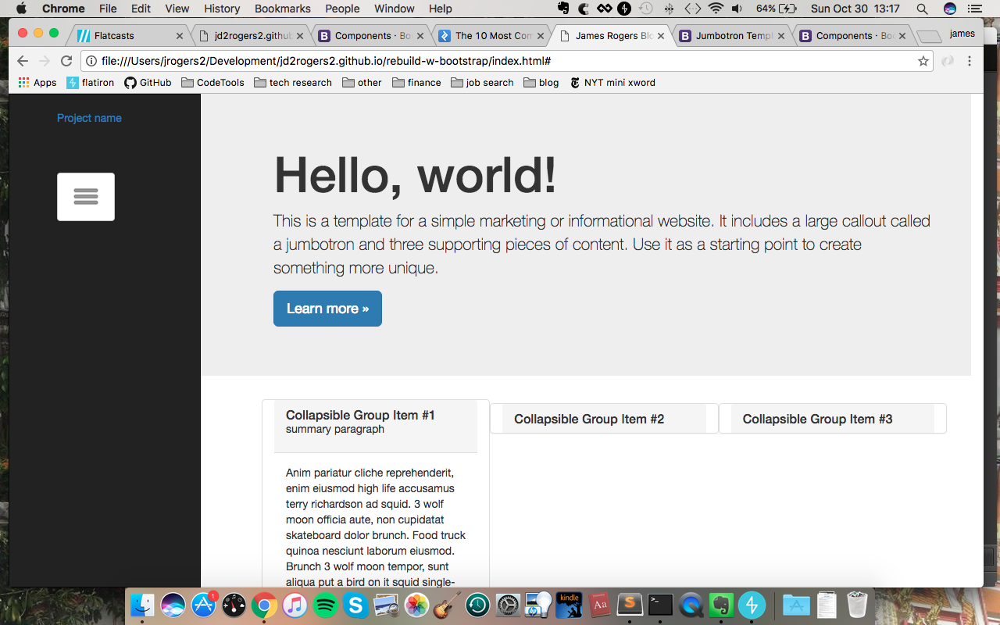
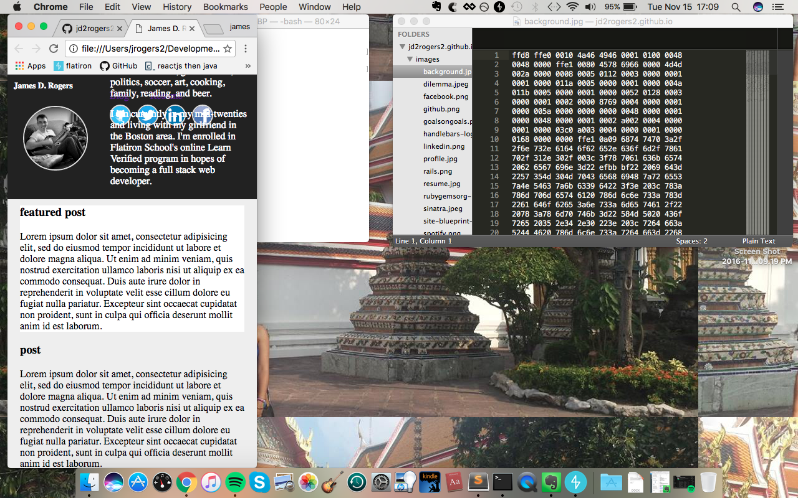

In this post I have be chronicled my attempt to revamp my basic static website to now utilize bootstrap. I also did a little research on web design and layout. To cut right to the chase, I didn't end up using bootstrap, just Jquery, but it was a valuable exercise to learn how bootstrap works especially the row, 12 column system.
My main goal is to make my site more modern. Some specific thoughts I had were to add more color without making it look tacky, drop down navigation or expanding posts from summary to full post, and add a featured post with other posts being minimized/summarized; also changing to a more creative layout.
If you’re doing the same remember to make a new branch before making any commits!
After reading some basic how tos on bootstrap it seemed the consensus was to start from scratch to get the page layout, css, and functionality up and running before you put your own content in. To do this you should start by copying the html file from a free bootstrap template. This can be found right on the bootstrap site. Also download bootstrap (minified version, comes with jquery, fonts, etc.) and put them into a folder in your root directory. Then check all your link and script tags and make sure your page looks and acts the same as the template. From there I just started googling 'bootstrap navbar left' or going through the bootstrap docs to find the feature I wanted such as collapsable divs.
After copying a lot of great functionality and layout I had a pretty nice looking website, however my code was about a mile long and I hadn't written any of it. This is where I decided to change my strategy. It was overwhelming. I found it best to simply borrow the general workings of the code. So I would read over the code that I would have borrowed, pick out the top three or four pieces, such as a listener function that would add and remove classes upon click or window resize, and rephrase it in my own project.
So I guess really I was sort of using bootstrap's functionalities, or what other people had built with bootstrap, but not using their css. I found it better to start from scratch on my own styling rather than tinker with some default classes. It felt like painting my own piece rather than taking pieces of other works of art, cutting them up, and then gluing and blending the colors and painting styles.
Similar to my approach with borrowing responsive components, a lot of the ‘web design research' that I did was mostly just finding themes/templates that I liked. I did however find some objective info such as: gradients are out of style, full width sites are in (so no margins on the sides, or at least no border separating your main content), and most importantly I found a lot of info on why to predominantly feature media, especially pictures. So again, I would find a page that had a navbar on the left and check what styling they had applied using my developer tools and try what I had learned in my own site.
Well I’m decently pleased with how things turned out. I do wish that I could have fit my twitter feed and feature photo from my old blog in somehow; and looking back at my old blog I do like how it's simple and just in general how it looks. Again though, I’m pleased as I accomplished many of the goals I set out to.
resources
- https://designshack.net/articles/layouts/10-rock-solid-website-layout-examples/
- https://w3layouts.com/blogging-template/
- http://www.codeproject.com/Tips/889031/Bootstrap-for-Beginners
- https://www.youtube.com/watch?v=V3DHVK4_N4o


